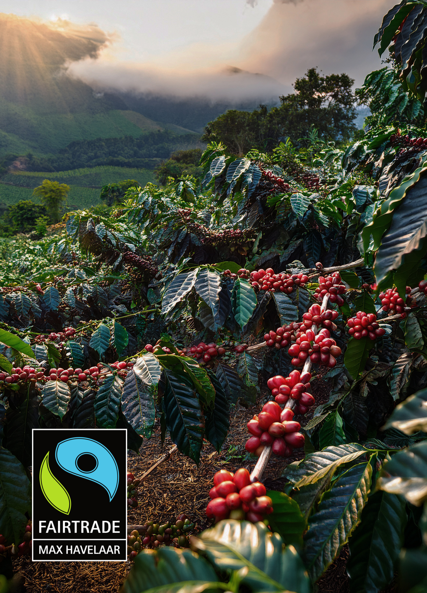

커피 한 잔에 130년의 노하우를 담다
카페 리차드 커피는 커피나무가 자라는 지역부터
재배 과정, 로스팅, 운송,품질 유지,고객에게 도착하는 순간까지 철저히 관리되며
경제적 및 환경적 기준으로 사회적 준수에 따라 판매됩니다.
- 좋은 커피는 재료에서 시작되고, 정성으로 완성되며, 세계의 기준을 넘어섭니다.
- 한 잔의 커피에 담긴 세 가지 약속: 최상의 원두, 완벽한 공정, 글로벌 기준의 품질.
From Bean to Beyond
원두, 그 이상을 담다 -
뛰어난 맛과 향을 자랑하는
카페 리차드 커피와 함께 하세요.
-
프리미엄
최고의 농장에서 재배한
뛰어난 품질의 생두를 가져옵니다. -
장인정신
전문가들이 특별한 로스팅 기법으로
가장 맛있는 커피의 맛을 이끌어냅니다. -
글로벌 인증
2003년부터 품질 관리에 참여하고 있으며
ISO 9001 인증을 받았습니다.
특별한 인증 시스템
카페 리차드의 제품은 세심한 인증시스템을 거쳐 제작되며
이는 사회ㆍ환경ㆍ생산자 등 다양한 측면에서 이로운 영향을 끼칩니다.
-
공정무역 인증라벨
Label Fairtrade / Max Havelaar카페 리차드는 공정 무역 커피의 선두 역할을 해왔습니다.
이 라벨은 제품의 품질을 보장함과 동시에, 생산자들의 소득과 더 나은 생활 조건을 촉진시키고 지역 사회의 작업 및 생활 조건을 개선하는 데 도움이 된다는 것을 뜻합니다. -
 유기농 라벨
유기농 라벨
Organic Agriculture제품에 95% 이상의 유기농 성분이 포함된 제품에만 사용할 수 있는 유럽 연합 유기농 로고입니다.
생산, 가공, 운송 및 보관 방법에 대한 부분에서 엄격하게 따져 선별되며
이를 통해 소비자는 유기농 제품을 더 쉽게 식별할 수 있고 농민들이 EU 전역에서 유기농 제품을 판매할 수 있습니다. -
 수마트라 오랑우탄 보호 프로그램 SOCP
수마트라 오랑우탄 보호 프로그램 SOCP
Sumatra Orang Utan Conservation Program카페 리차드는 프랑스에서 독점적으로 오랑우탄 커피 : 수마트라 스페셜티 커피를 제공합니다.
SOCP 프로그램은 세계에서 오랑우탄을 성공적으로 야생에 재도입하는 유일한 프로그램으로,
삼림 벌채를 방지하여 오랑우탄의 자연 서식지를 보존하고 있습니다. -
지속가능한 농업 라벨
UTZ Certified커피 재배 지역의 환경을 보호하기 위해 최선을 다하고 책임감 있게 농업 부문을 섬세히 관리하고 있으며
장애인을 보호하고 현지에서 취업할 수 있도록 도와줍니다. -
열대우림 동맹
Rainforest Alliance산림 보호, 농민과 산림 공동체의 생계 개선, 인권 증진, 기후 위기 완화 등 농부들이 더 좋은 작물을 생산할 수 있도록 도우며,
산림 커뮤니티, 기업 및 소비자의 동맹을 구축하고 있습니다. -
원산지 보호 및 표시
Protected Geographical Indication커피의 원산지와 특정 품질을 보증합니다.
생산자가 제품에 대해 공정한 가격을 받을 수 있도록 돕고, 소비자에게 식품의 품질에 대한 자세한 정보를 제공하는 역할을 합니다. -
스페셜티 커피 협회 점수
SCORE SCA스페셜티 커피는 커피의 등급을 1에서 100까지의 점수로 환산했을 때, 80점이 넘는 커피를 뜻합니다.
-
스페셜티 커피 협회 SCA
Specialty Coffee AssociationSCA는 개방성과 포용성, 그리고 지식 공유의 중요성을 기초로 설립된 회원 기반의 비영리 기관으로,
스페셜티 커피 커뮤니티의 오랜 통찰과 영감을 적극 활용하여 공정하고 지속 가능하며 모두가 성장할 수 있는 업계를 만드는데 주력합니다.
Our Products
카페 리차드는 최고의 농장에서 원두를 엄선하여
전문가의 특별한 로스팅 기법으로 볶아 가장 맛있는 커피의 맛을 이끌어냅니다.
A WELL-KNOWN,
RECOGNISED BRAND
프랑스의 카페 리차드 본사에서는 커피 원두뿐만 아니라
커피 머신, 커피 템퍼, 피처 등과 같은 바리스타 도구부터
캡슐 커피, 허브티, 설탕 및 간식류, 초콜릿 분말, 주전자, 컵, 그릇 등
다양한 제품을 취급하고 있습니다.
더 책임감 있는 커피를 위한 우리의 약속
“생두 선택부터 커피를 포장하는 것까지, 최상의 조건에서”
1892년 설립된 메종 리차드의 노하우를 계승한 카페 리차드